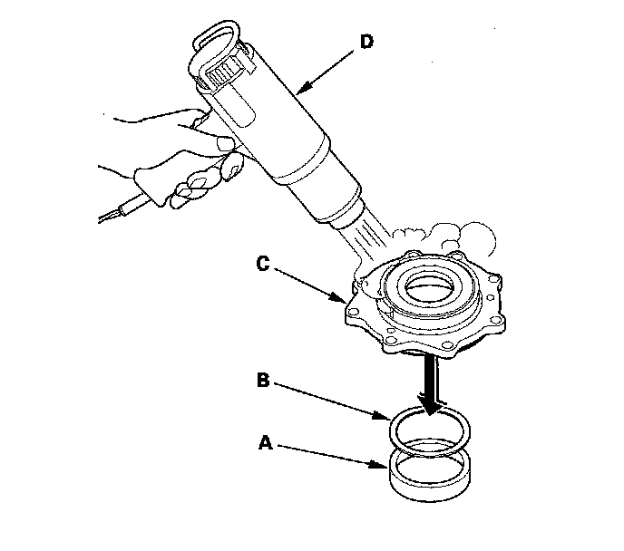
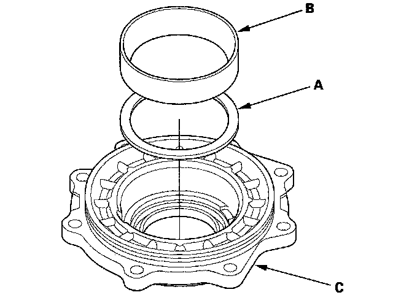
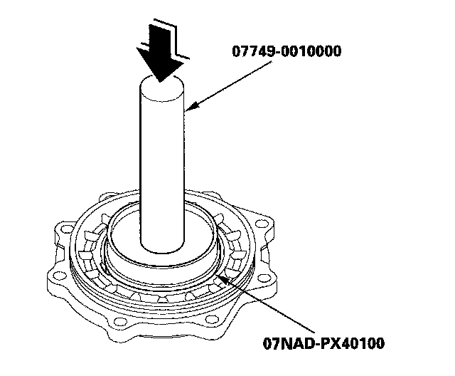

Transfer Cover Tapered Roller Bearing Outer Race Removal/Installation
Transfer Cover Tapered Roller Bearing Outer Race Removal/InstallationSpecial Tools Required
^ Driver 07749-0010000
^ Attachment, 78 x 80 mm 07NAD-PX40100
NOTE: Replace the bearing with a new one whenever the outer race is replaced.
1. Remove the bearing outer race (A) and 80 mm thrust shim (B) from the transfer cover (C). If the bearing outer race is press-fitted, remove the outer race by heating the cover to about 212°F (100°C) with a heat gun (D). Do not heat the housing more than 212°F (100°C).

2. Install the 80 mm thrust shim (A) and bearing outer race (B) in the transfer cover (C).

3. Drive the outer race securely in the cover using the driver and the attachment (78 x 80 mm) so there is no clearance between the outer race, thrust shim, and cover.
